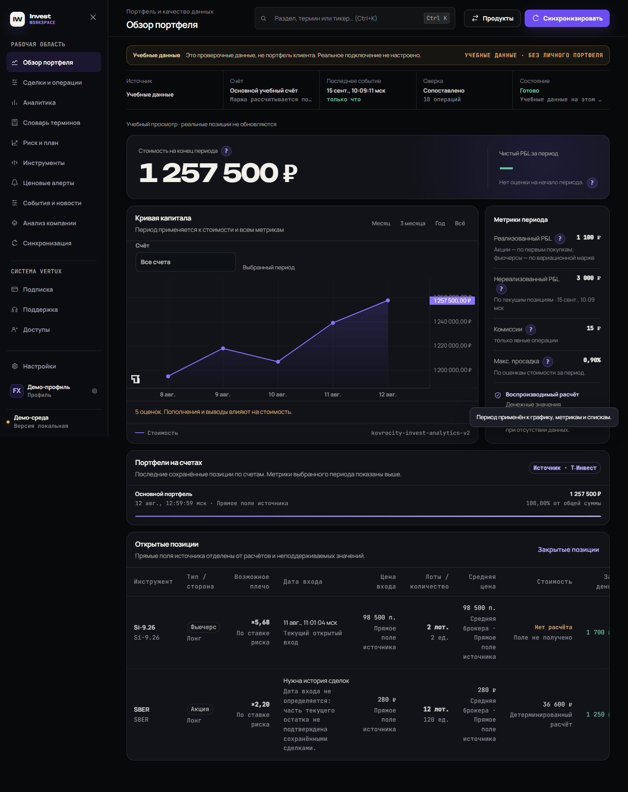

Ваши задачи.
Собраны в Nexus.
Рабочие пространства для бизнеса и личных инвестиций. Создаём системы под процессы компаний и готовим Invest Workspace к запуску по подписке.
Одна платформа. Разные задачи. Свой Workspace.
Invest Workspace
Готовим к запускуВесь портфель.
В поле зрения.
Личное рабочее пространство инвестора: история операций, аналитика и план действий рядом. Единый продукт со своим счётом и настройками.
- Понимать результат
- Стоимость портфеля, история операций, комиссии и динамика за выбранный период.
- Держать план перед глазами
- Инструменты, календарь, напоминания и торговый план в одном рабочем пространстве.
- Работать со своими данными
- Портфель и ключ брокера хранятся на вашем Windows-компьютере. Подключение работает в режиме просмотра.
{kind=link}

Один план. Выбираете срок.
Планируемая подписка с одинаковыми возможностями на месяц, три месяца или год.
- 1 месяц
- 1 490 ₽1 490 ₽ / месяц
- 3 месяца
- 3 990 ₽1 330 ₽ / месяц
- 1 год
- 14 900 ₽≈ 1 242 ₽ / месяц
Продажи ещё не открыты. Условия на 3 месяца и год предварительные; дату запуска и состав AI-функций сообщим отдельно.
Обсудить ранний доступКакие брокеры будут поддерживаться?
Первую версию готовим с подключением к Т-Инвестициям для просмотра данных своего счёта. Интеграции с другими брокерами исследуем; готовых подключений к ним пока нет.
Что с AI-анализом и пробным периодом?
Планируем анализ компаний, работу с новостями и 30-дневный пробный период. Сейчас выбираем AI-провайдера и лимиты: эти функции и пробный доступ ещё не запущены.
Можно ли пользоваться с телефона?
Первую версию готовим для Windows. Общий облачный портфель и доступ к нему с телефона пока не входят в заявленные возможности.
Workspace по логике
вашей компании.
Для задач бизнеса создаём индивидуальные системы: ваши процессы, роли и интеграции. Состав, стоимость и сопровождение определяем после знакомства с задачей.
ОБЗОР / ДЕМО
+Новое действиеРабочий день в одном контуре
Процессы, команда и важные события собраны в понятную картину.
Рабочие контурыСИНХРОНИЗИРОВАНО
RQЗапросыНовые · В работе · РешеноАКТИВЕН
PRПроектыЭтапы · Команда · БюджетАКТИВЕН
DCДокументыПроверка · Согласование · АрхивАКТИВЕН
INИнтеграцииСайт · CRM · Локальные данныеONLINE
Ритм процессовДЕМО
7 ДНЕЙБез перегрузки
ПРОЦЕСС / ЖИВОЙ МАРШРУТ
В РАБОТЕКаждому понятно, что делать дальше
Один объект хранит статус, ответственного, срок, заметку и всю историю.
КАРТОЧКА ПРОЦЕССАЗапуск новой услугиПРИОРИТЕТ · ОБЫЧНЫЙ
Запрос получен09:14Ответственный назначен09:18Материалы на согласованииСЕЙЧАС
AI / КОНТЕКСТ КОМПАНИИ
ДОСТУП ПО РОЛЯМAI понимает задачу, а не только вопрос
Ищет в разрешённых данных, собирает сводку, проверяет риски и предлагает действие.
AIЗАПРОССобери сводку по проекту и найди риски
18Документов42События истории07Правил процесса
КРАТКИЙ ВЫВОД
Срок зависит от согласования приложения. В карточке не назначен владелец финальной проверки.
Следующий шаг: запросить подтверждение до 16:00ИНТЕГРАЦИИ / ЕДИНЫЙ КОНТУР
ОБЛАКО + LOCAL NODEПодключается к тому, что уже есть
Облачные сервисы, формы, базы и локальные файлы остаются источниками, а Nexus связывает их с процессом.
 NEXUSРАБОЧИЙ ПРОЦЕСС
NEXUSРАБОЧИЙ ПРОЦЕССTBТаблицыCSV · XLSX
FMФормыWEB · APP
CMCRM / ERPAPI · SYNC
FLЛокальные файлыLOCAL NODE
MLПочта и чатыEVENTS
Источники синхронизированыСЕЙЧАСЗакрытые данные доступны только по ролиЗАЩИЩЕНО
Пример Workspace для бизнеса · выберите раздел внутри интерфейса
ПРОЦЕССЫЗАПРОСЫДОКУМЕНТЫСОГЛАСОВАНИЯЗНАНИЯИНТЕГРАЦИИПРОЕКТЫФИНАНСЫКОМАНДААВТОМАТИЗАЦИИАНАЛИТИКАБЕЗОПАСНОСТЬ
01 / СИСТЕМА
Источников много.
Процесс один.
Nexus не заменяет всё вокруг. Он связывает нужные данные с рабочей логикой компании и показывает команде единое состояние задачи.
ИСТОЧНИКИ КОМПАНИИ
TBТаблицыCSV · XLSX01
CHЧаты и почтаСООБЩЕНИЯ02
FMФормыWEB · APP03
DCДокументыPDF · DOCX04
SVСервисыCRM · ERP · API05
ЕДИНЫЙ РАБОЧИЙ ОБЪЕКТВ РАБОТЕЗапрос на изменение условий
ПолученоПровереноСогласованиеГотово
СЛЕДУЮЩЕЕ ДЕЙСТВИЕПодтвердить обновлённый документИстория и вложения сохранены
ВАШ РАБОЧИЙ МАРШРУТ
Интерфейс повторяет реальную работу
Названия, роли, этапы и правила остаются знакомыми команде. Меняется только одно: теперь ничего не теряется между людьми и сервисами.
МАРШРУТ ПРОЦЕССА01Поступилоиз любого канала 02В работевладелец и срок 03Решениепроверка и согласование 04Результатистория сохранена
AI И ЗНАНИЯ
AI работает в контексте задачи
Собирает сводку, находит сведения, проверяет данные и предлагает следующий шаг прямо в рабочем объекте.
КОНТРОЛЬ
Состояние видно без ручного отчёта
Сроки, загрузка, расход AI, ошибки интеграций и история действий остаются в одной наблюдаемой системе.
02 / ПРОДУКТ
Один Nexus.
Ваша логика внутри.
Состав модулей меняется от компании к компании. Не меняется только ясность: что происходит, кто отвечает и что дальше.
ПРОЦЕСС / ЕЖЕДНЕВНАЯ РАБОТА
Каждый этап виден. Следующий шаг не теряется.
Заявка, документ, заказ, проект или внутренняя задача проходят именно те этапы, которые приняты в компании.
- Свои сущности и этапы
- Роли и ручные статусы
- Сроки, заметки и история
МАРШРУТ ПРОЦЕССАЗапрос на изменение условийВ РАБОТЕ
01Получено09:1402Проверено09:2203СогласованиеСЕЙЧАС04ГотовоNEXT
СЛЕДУЮЩЕЕ ДЕЙСТВИЕПодтвердить обновлённый документ↗
AI / КОНТЕКСТ И РЕШЕНИЯ
AI встроен туда, где возникает вопрос
Он работает с разрешёнными документами, событиями и правилами процесса, а результат возвращает в карточку задачи.
- Поиск по знаниям
- Сводки и проверка
- Подготовка следующего шага
AI
DCДокументы18 ФАЙЛОВ
HSИстория42 СОБЫТИЯ
RLПравила07 ПРАВИЛ
ИНТЕГРАЦИИ / НУЖНЫЕ ИСТОЧНИКИ
Nexus связывает, а не заставляет переезжать
Сайт, CRM, ERP, почта, API и локальные файлы подключаются по задаче. Закрытые данные могут оставаться внутри компании.
- Облачные коннекторы
- Local Node для закрытого контура
- Версии и состояние подключений
NXЦЕНТР NEXUSРОЛИ · ВЕРСИИ · СОСТОЯНИЕ
INИСТОЧНИКИCRM · ERP · ФАЙЛЫ · API
WEBCRMERPAPIЛОКАЛЬНО
Данные синхронизированыСЕЙЧАСВерсия подключения подтвержденаv1.8.2Закрытый источникЛОКАЛЬНО
03 / РАЗМЕЩЕНИЕ
Данные работают там,
где им безопаснее.
Способ размещения выбирается по процессу и чувствительности данных. Локальная часть, облако или гибрид могут работать как один продукт.
На компьютере компании
Закрытые операции и файлы остаются локально. Nexus управляет доступом, конфигурацией и версиями.
- Вычисления
- ПК клиента
- Закрытые данные
- Локально
- Серверная часть
- Минимальная
Облако + Local Node
Команда работает через облачный интерфейс, а чувствительные файлы и локальные системы остаются внутри компании.
- Доступ команды
- 24/7
- Закрытый контур
- На ПК
- Подключения
- По задаче
В контуре Vertux
Планируемый вариант с изолированным серверным контуром, мониторингом, резервированием и обновлениями.
- Доступ команды
- 24/7
- Инфраструктура
- Vertux
- Статус
- В плане
04 / КАБИНЕТ
Продукт остаётся
под вашим контролем.
В кабинете видны доступные контуры, версии, лимиты, состояние подключений и поддержка. Каждый сотрудник получает только разрешённые ему продукты.
Кабинет компанииПОДКЛЮЧЕНОТЕКУЩИЙ ПЛАНNexus Hybrid64%AI-ЛИМИТА
PRРабочий процессv1.8.2АКТИВЕН
AIAI и знанияv0.6.4АКТИВЕН
INИнтеграции5 источниковONLINE
VertuxNEXUSВаш процесс.
Собран в продукт.
Начнём с одной рабочей задачи, соберём Nexus и подключим нужные модули без лишней инфраструктуры.